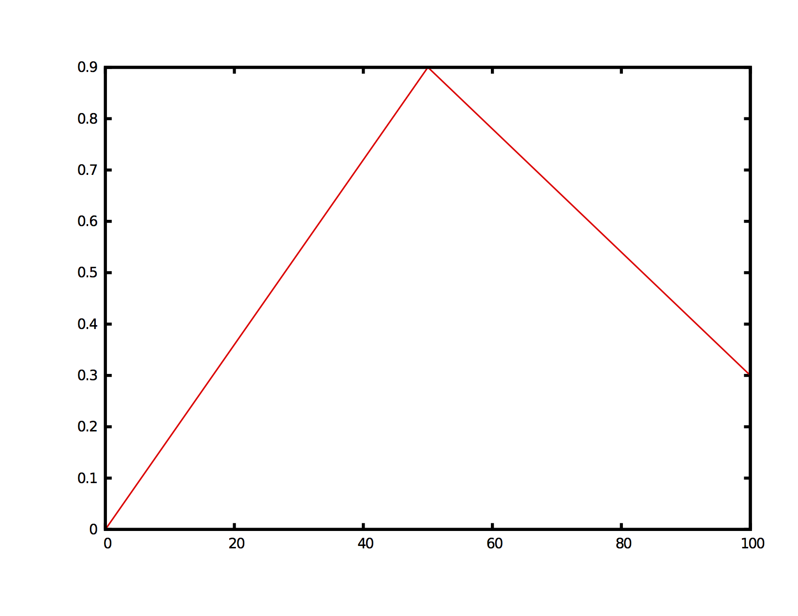
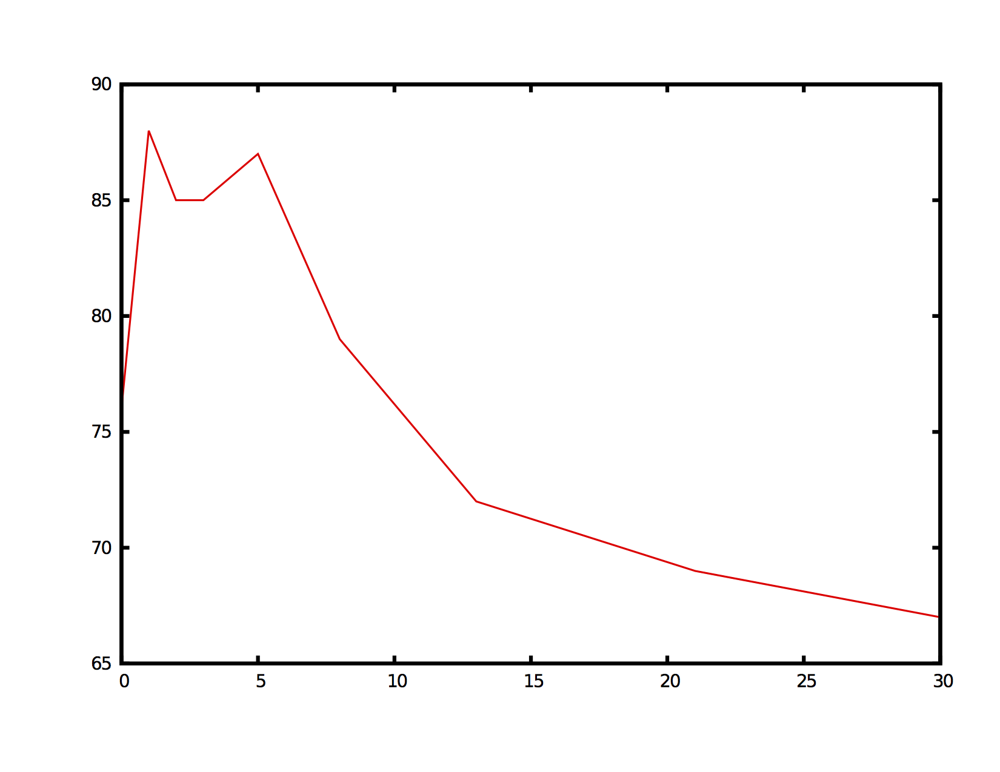

Envelopes
Many of slippery chicken's features allow the user to specify predetermined changes to the value of a single parameter over time by defining what are known as envelopes. Envelopes in signal processing refer to the contour, or curve, created by the amplitude peaks of a waveform. This image shows the envelope of the given waveform in red:
 |
x-y (or "breakpoint") pairs
Since envelopes are linear constructions, they can be described or defined by pairs of values, the first of each pair being the x-axis value (often representing time) and the second being the y-axis value of the envelope at that point. For example, in the envelope above, at x-axis 0.000 the envelope has a y-axis value of 0.0; at x-axis 0.020 the envelope has a value of 0.8; at 0.030 the envelope has a value of 0.5, where it remains until 0.060; and at x-axis 0.100 the envelope returns to a y-value of 0.0. The following x-y pairs are thus present in the above envelope:
(0.000 0.0) (0.020 0.8) (0.030 0.5) (0.060 0.5) (0.100 0.0)
These pairs of x and y values are often referred to as breakpoint pairs, and in slippery chicken they are generally given in lists without any extra parentheses, commas, or other delineating marks. The envelope from the image above can be represented as the following list of breakpoint pairs:
(0.000 0.0 0.020 0.8 0.030 0.5 0.060 0.5 0.100 0.0)
x-values in slippery chicken can have any arbitrary scale
The x-values in slippery chicken's envelopes can span any arbitrary number range and will be automatically scaled accordingly. For example, the x-values from the above image could be given as:
(0.000 y1 0.020 y2 0.030 y3 0.060 y4 0.100 y5)
or
(0.0 y1 0.2 y2 0.3 y3 0.6 y4 1.0 y5)
or
(0 y1 20 y2 30 y3 60 y4 100 y5)
or even
(1.0 y1 2772.4001 y2 4158.1 y3 8315.2 y4 13858.0 y5)
In each case, the x-axis of the envelope created will start with the first x-value and end with the last x-value of the list of breakpoint pairs, and the length of each segment of the resulting envelope will be scaled to correspond to the remaining x-values in the list.
Envelope segments
When an envelope is generated based on a user-defined list of breakpoint pairs, the resulting curve is created by essentially drawing a straight line between each of the y-values in those pairs. This produces an envelope with one fewer segments than there are x-y pairs. The more breakpoint pairs there are in the list, the more segments the resulting curve will have.
The following envelope is made from the three sets of breakpoint
pairs:
(0 0.0 50 0.9 100 0.3). It therefore has two segments:
|  |
This envelope is made from the nine sets of breakpoint pairs:
(0 76 1 88 2 85 3 85 5 87 8 79 13 72 21 69 30 67).
It
therefore has eight segments:
|  |
Because envelopes are made of segments, any definition of an envelope must consist of at least two breakpoint pairs.
Interpolation
The breakpoint pairs stipulated by the user only create a finite number of points on the envelope's overall final shape. All of the other points needed to create the segments between the breakpoints are calculated automatically by Lisp using interpolation. Different interpolation algorithms will produce segments with different shapes, such as exponential or hyperbolic curves, or simply straight lines. slippery chicken generates the segments for most of its envelopes using straight lines, through linear interpolation.
Various parameters that are controlled by envelopes
Envelopes can be used to control any time-based parameter, not just
signal amplitude. For example, slippery chicken uses envelopes
to control features such as the activity levels (playing or resting) of
the instruments
in rthm-chain
objects, to shape the volume of output produced by
the clm-play
method, or to determine the highest and lowest pitches for individual
instruments (or the whole ensemble) using
the set-limits-high and set-limits-low slots
of
the slippery-chicken
class. (NB: In the case of the set-limits- slots, the
note-name symbols given by the user are first converted to MIDI pitch
integers so that the interpolation can be performed.)
More on how envelopes are used to influence these features can be found in the source code documentation for the individual classes, methods, and functions.